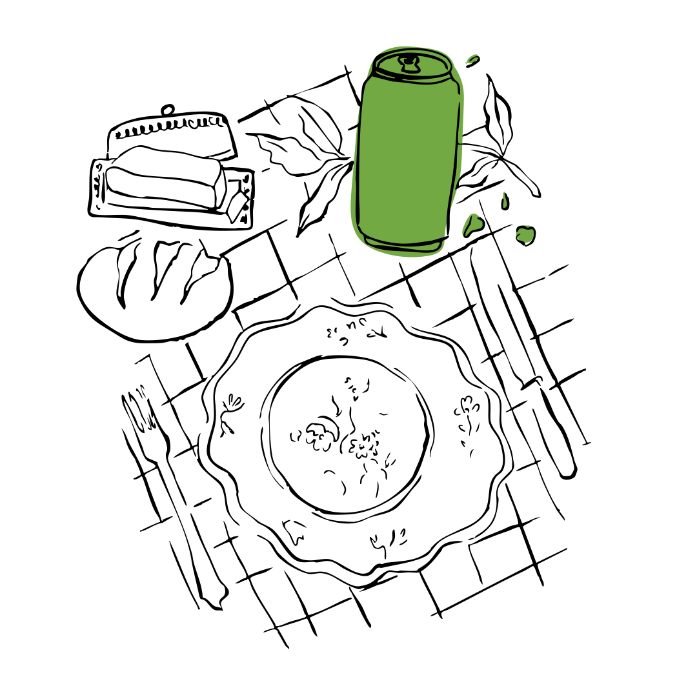
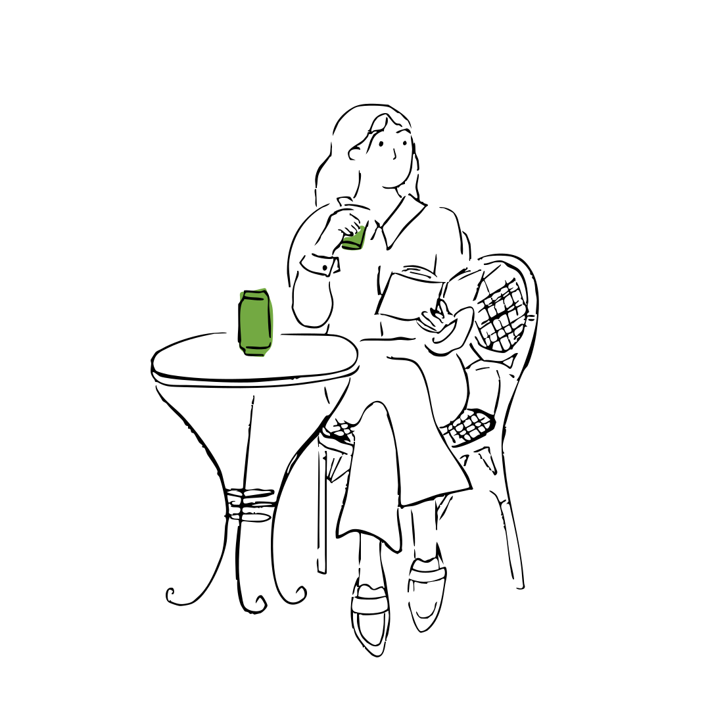
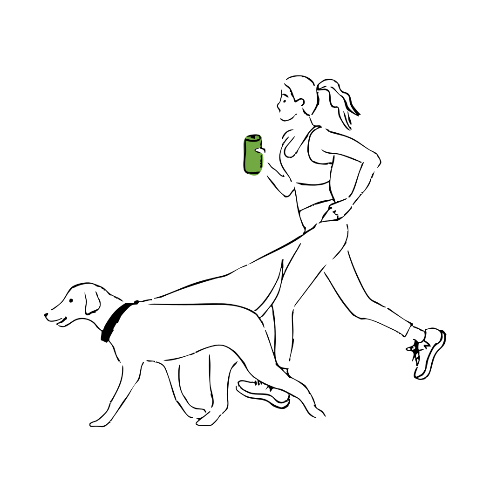
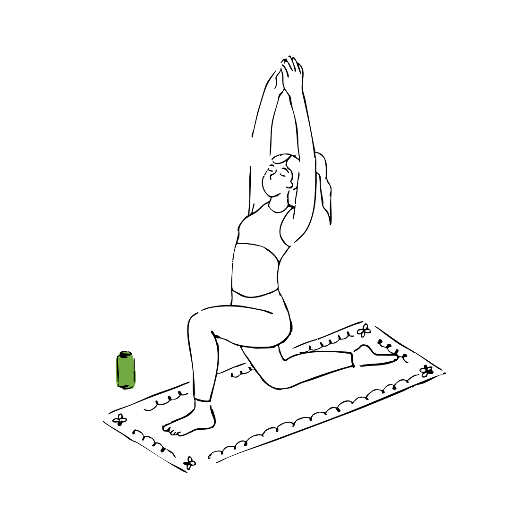
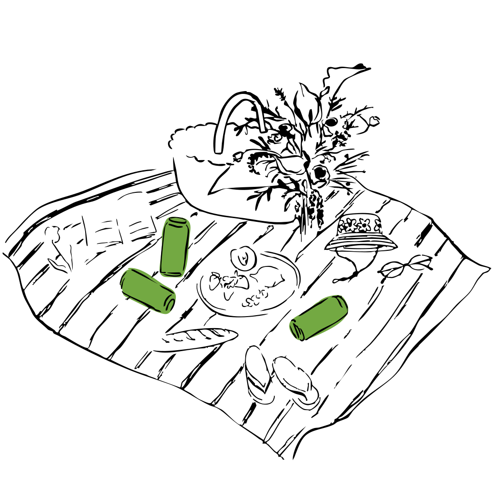
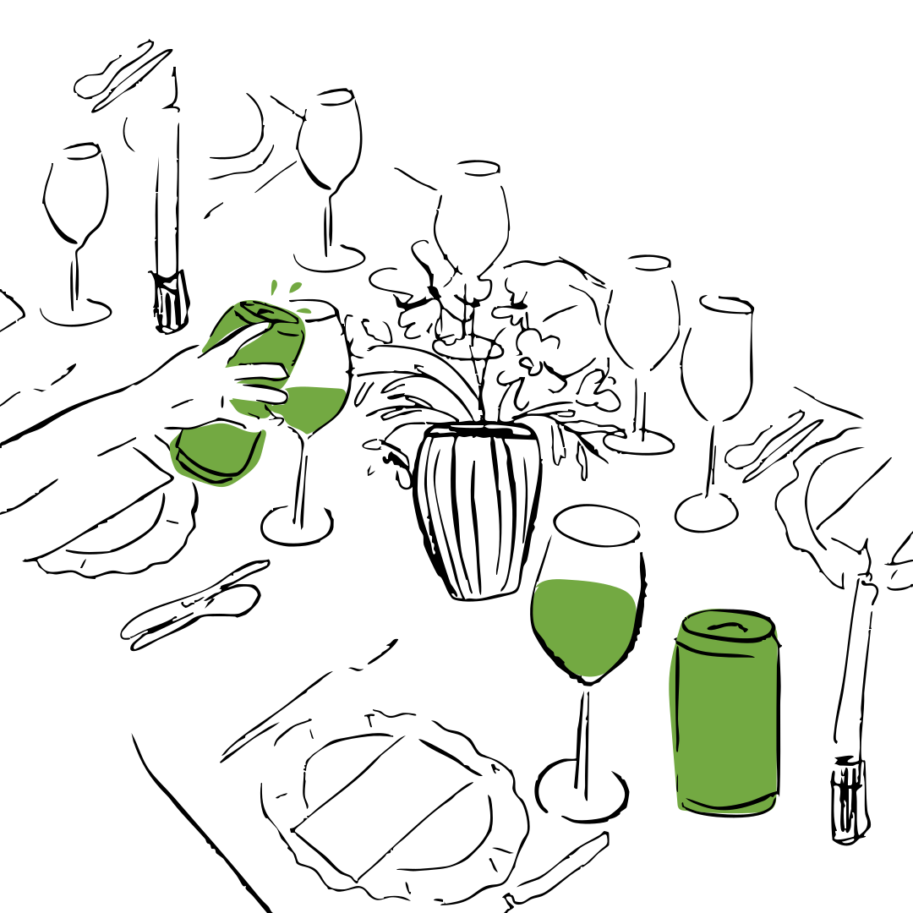
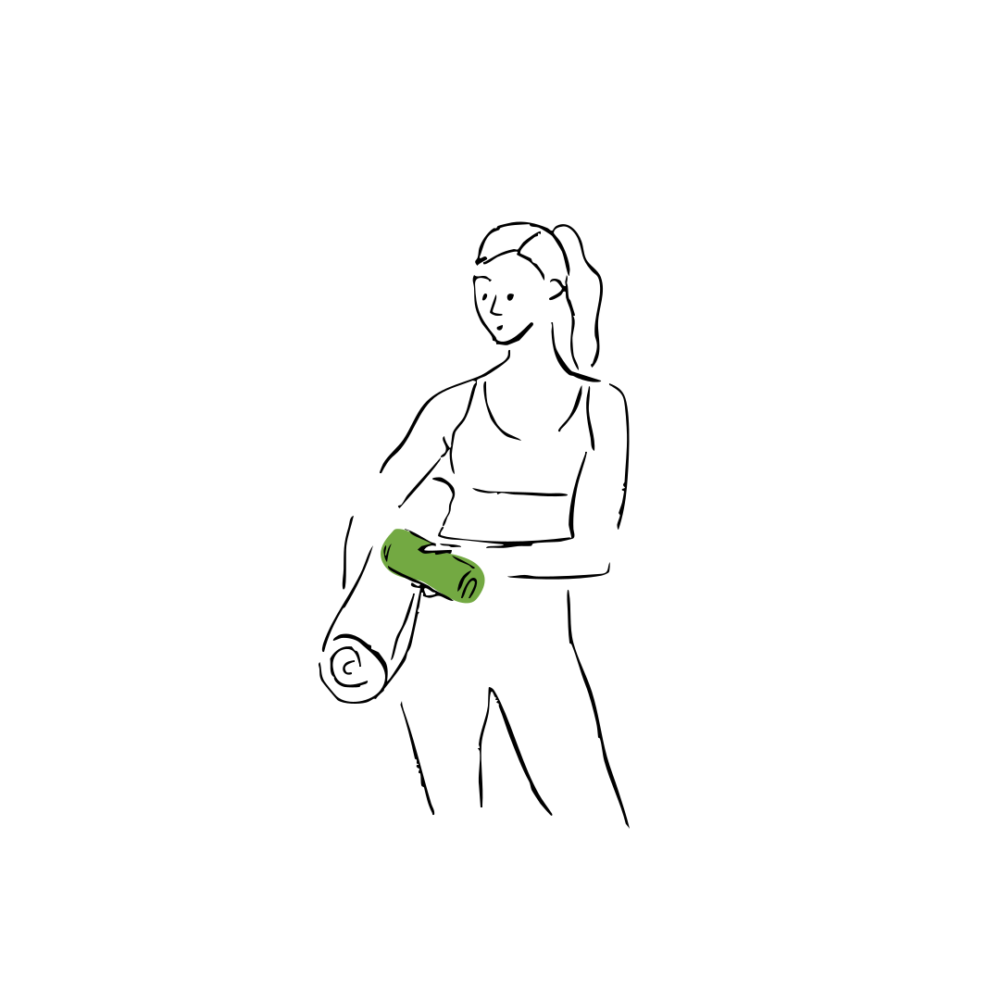

Ceremonial-grade matcha, in motion. Single-origin Kagoshima, whisked with L‑Theanine and a whisper of yuzu — lightly sparkling, quietly energising. The lift, without the crash.

Not an energy drink. A functional one — small, considered, honest. Ceremonial Kagoshima matcha, the amino acid that keeps you level, and half a coffee's caffeine. If it's in the can, it's on the can.
The amino acid that makes matcha feel unlike coffee. It smooths the caffeine curve into a long, level plateau — so the afternoon stays even.
PlateauAbout half a coffee. Drawn from the matcha leaf itself — no synthetic anhydrous, no guarana, no taurine. Enough to lift, never enough to jitter.
LiftStone-ground Kagoshima from the first harvest — the leaf you can't get in a sachet. Lifted with 0.4% pressed yuzu. Tastes like a tea room.
SourceBe the first to know when COULD appears next to you — a new studio, a quiet café, a market stall. Tell us where you are, and we'll come find you.
Thank you — we'll be in touch the moment COULD turns up near you. Until then, slow afternoons to you.
From the first slow hour to the long way home — the moments a can does its quiet work.

Morning ritual07:00 · before the inbox
Me-time pause11:00 · the room alone
Active flow12:30 · the Z2 zone
Mindful balance16:00 · the reset
Picnic17:00 · the park
Elegant table19:00 · the friends
Post-workout20:00 · the recoveryCalm, collected, quietly sparkling — a can that tastes like time to yourself.Possibility is a can.